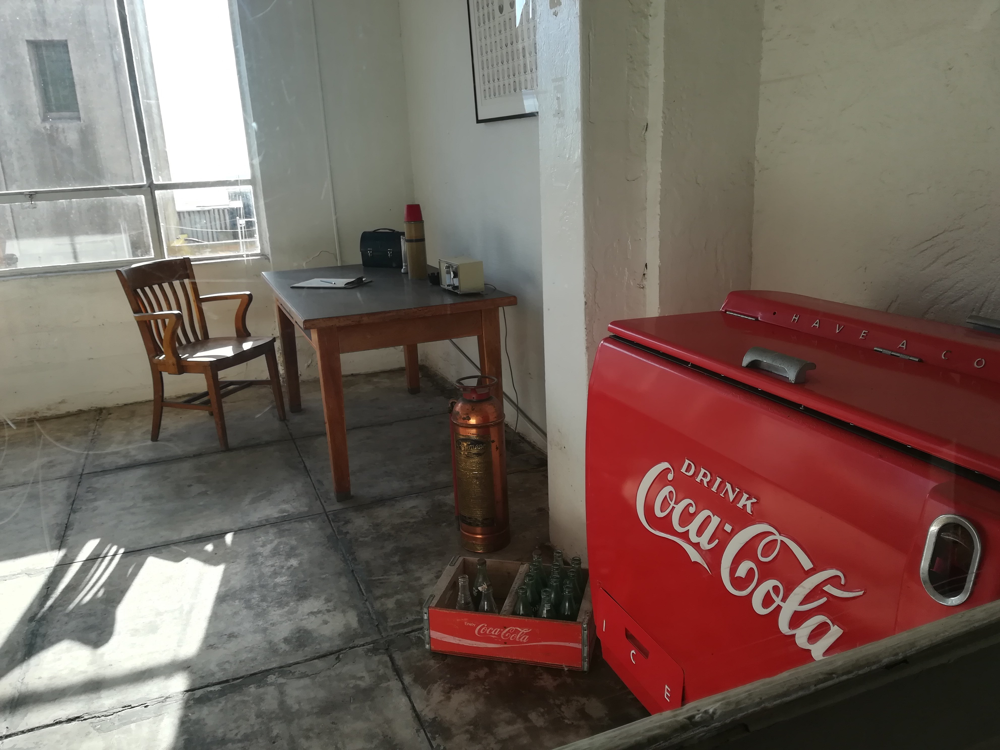
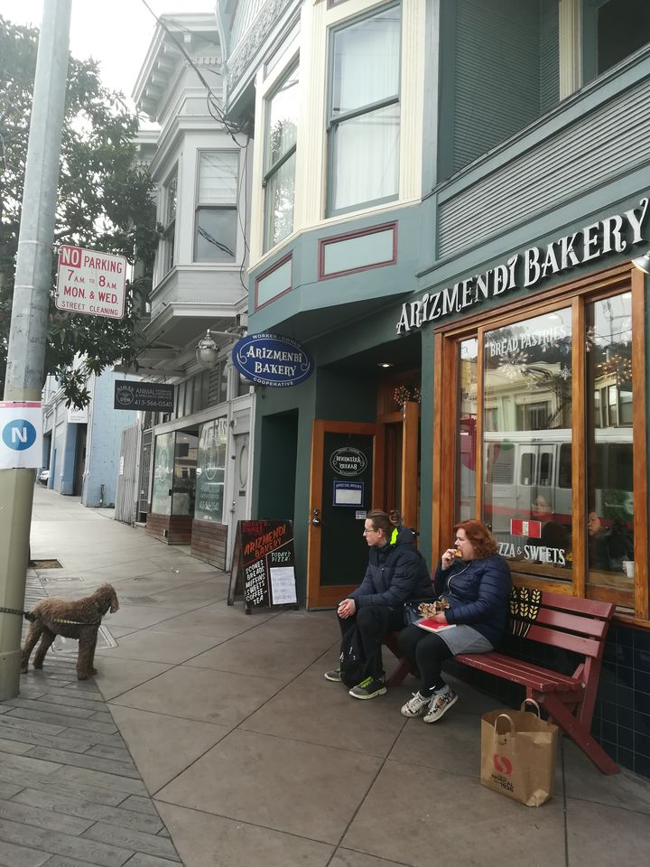

Kelionė po Kaliforniją. 2 dalis San Fransisco.
Tęsiu savo aprašymą apie kelionę į Kaliforniją. Pirmą dalį skaitykite mano svetainėje. 5 kelionės diena. 2019 Gruodžio 4 d. 07:00 Jūs pagalvokit, jau penkios dienos kelionės baigia praeiti, o atrodo tik ką lipau iš lėktuvo. Su Artūru keliaujame iki nuomos ‚Enterprise‘ punkto pasiimti Toyota Camry (po šios kelionės ji mums labai patiks ir bus nr. 1 kurią norėtume irgi turėti, bet pamatę jos kainą, kažkaip labiau tuos pinigus išleistumėm dar mažiausiai aštuonioms Amerikoms). Vien jau vairuoti mašiną su California numeriais yra wow.

Kadangi kreditinė kortelė tai mamos, o mama laukia ant tašių viešbuty, agentai sako, jog teks atsivežti į nuomos punktą ir mamą ir ar mama turi teises? Nes kitaip nieko nebus. Tai visa laimė, kad jai liepiau jas pasiimti, jie mums iškviečia „Uber“ atsivežame mamą, jie apmoka mums 20 dol. už pravažinėjimą, nors mes te sumokėjome 14 dol. ir jie apvalina sumą. Nors realiai čia mes nežinojome šitų niuansų, kitur būtų tavo problema, niekas už taxi tau nemokėtų. Taigi nuoma kainavo 194 dol. Ir kuras 40 dol. Atstumas virš 600 km. Į nuomą įėjo camry 2018 metų, pilnas maximalus draudimas, koks tik gali būti, ne tik automobiliui, bet ir mums, kurie sėdėsime viduje, ir brangiau mokame plius 50 dol, nes automobilį paliksime San Franciske, o ne iš ten kur paėmėm. Na kuras tai atrodo pigiau grybo. Ką gi, akys pradžioje buvo didelės, kol išvažiavome iš Los Angeles, užtrukome gal apie 1,5 h. Važiuojamosios juostos beveik visur 5-7. Ratais kvadratais, praleidę kelis išvažiavimus kur reikėjo pasukti, pagaliau mes reikiamame highway. Jausmas tai pats nerealiausias, pamatyti Ameriką iš automobilio, pajusti greitkelių pulsą ir greitį, jau nekalbu, kokia atsiveria panorama bevažiuojant. Vienos atkarpos kelio pavadinimas buvo juokingas- Smoked bear Road (Rukytos meškos kelias). Primena senus saliūnų laikus . Eismas nemažas, avarijų nemažai, nieko nuostabaus, kai toks srautas ir tokie greičiai, pradedu skaičiuoti avarijas, tai visam 600 km ruože 10 avarijų iš jų 8 itin kraupios. Bet neskaitant šių avarijų, vairuoti atrodo yra maloniau nei Lietuvoje, nėra dalbajobų tiek kiek pas mus keliuose ir ypač regioniniuose. Klausome radijo stočių, jos groja tik gerą muziką, net atsisiunčiu apps‘ą, kad ir nebūdama Amerikoje galėčiau klausytis Kalifornijos radijo stočių.
Sustojame ‚McDonalds’ pavalgyti, ten sutinkame moterį, jį klausia mūsų: -Guy‘s where are you going? -To San Fransisco. -Where are you from? -From L.A. But we are not locals, we came from Lithuania. -oh I know, Baltic States. Where you landed? I thouhgt you are from Salem, you looks like, from Salem. Ir taip nuolatos, vyksta pokalbiai, žmonės nuolatos domisi, man patinka toks bendravimas. Man taip pat įdomu iš kur tokie draugiški, kalbūs žmonės, ši moteris buvo iš Jutos valstijos. Vėliau jau grįžusi susirandu susirašinėjimo draugą iš Salt Lake City, Utah. Ir jau slapta svajoju aplankyti Jutos valstiją. Prieš valgymą prisipildome litrinius puodelius limonado, bevalgydami juos išgeriam, prieš išeinant dar po litrą prisipildome. Man labai nebūdinga tiek gerti limonado, bet čia jis ant tiek skanus, kad neįmanoma atsispirti. O dar tiek nematytų rūšių. Pamėgstu DR.PEPPER, keisto skonio, lyg „pertusinas“, tikiu daugumai lietuvių, mano pažįstamų jis nepatiktų, o man tinka idealiai. Grįžtame į trasą. Pavakaryje prilekiam prie San Francisko, o tolumoje vaizdas vertas džiaugsmo ir įspūdžio ašarų- Downton‘e daugybė žėrinčių dangoraižių. Artūrui išbandymas vairuoti. Vienu metu turėjau šturmanu būti, sakyti kur važiuoti remiantis navigacija, ir tuo pačiu išlysdavau pro langą ir žiūrėjau išsišiepus į tuos svaiginančius dangoraižius, o dar ir magę reguliavau, juk įvažiavus į San Francisko atitinkama daina turi skambėti: If you going to Saaaan Fransiscooo... Amerika lygiai tokia pati, kaip tuose gražiausiuose filmuose kur rodo. Nėra jokios apgaulės ar „foto šopo“, nes filmuose rodo, tai ką turi amerikiečiai, mažai kas suvaidinta, vietovės, žmonės.
Galų gale mūsų Lombart žymioji gatvė, kurioje yra ta žinoma vieta, Rodeo drive. Viešbutis tai wow, nes pro langus matome Golden Gate Bridge fragmentus, suvokti, jog esu San Franciske patikiu, tik žiūrėdama į šį tiltą. Nuolatos jeigu tik atrandu už padorią kainą viešbutį ir noriu, kad pro langus šis tas matytųsi. Kas gi nenori? 6 diena. Gruodžio 5 d. Turime į „Enterprise“ pristatyti „camry“. Ekstremalu buvo važiuoti iki nuomos punkto, tie skardžiai, stačios gatvės, dažnai tenka užsimerkti. Mano Artūras atlaiko ir šį išbandymą, nes jam labai patinka Amerikietiški kalneliai, o čia jausmas važiuojant panašus. Rytinės valkatėlės iš po nakties blogos nuotaikos, tai prisižiūrime dramų, užeiname į tik San Franciske esantį „the Peets coffe shop“, ir galiu pasakyti, kad jis patinka labiau, nei „Starbucks“. Ir labai gaila, kad nėra ‚The Peets‘ Europoje...Vėliau už kampo „Alexandria“ knygynas, kuriame praleidžiame gerą valandą. Eidami, atrandame Pašto muziejų „Wells Fargo“. Pasidarome dolerių su savo atvaizdais, pravažiuojame su senąja karieta. Aukso karštinės laiku, gabeno austres, paštą, bri sūrį, pinigus, alkoholį, keleivius tomis karietomis.
Toliau priėjome China town. Ten tikrai gali pasijusti, kaip Kinijos didmiesty, tačiau manęs per daug niekada netraukė ir netrauks Kinija, turiu savo motyvų, kodėl taip manau. Šią rašinio dalį buvau parašiusi dar prieš koroną, tada po China virus, aš uždėjau totalų baną šiai šaliai, ir jokių aliekspresų nebeperku, išsiversiu be to, palaikau Trumpo poziciją, šią šalį reikia sunaikinti, ir tikiuosi, ji dar sumokės už koroną-china virusą. Nes per juos aš 2020 rudenį-žiemą neįvykdysiu kelionių į Italiją, Ameriką ir dar kur nors, jau nekalbant kiek kitų žmonių nukentėjo savaip nuo viruso. Labiausiai nepatinka žmonės kinai, taikoma kinų politika prieš Tibetą, jo vienuolius, Dalai Lama, o dabar ir jų virusas, kurio nesustabdė, nors galėjo ir privalėjo, tad galutinai atgrasi šalis. Grįžtu į eterį. Esam išalkę, užeiname pavalgyti dienos meniu, kurį sudaro sriuba, sušiai, garuose virtos daržovės.
Vėliau lipame į tramvajų ir bandome važiuoti stačiomis gatvėmis, kur ten gatvėmis ten stačiausi skardžiai, tampa dar baisiau, nei automobiliu. Pagrindiniam „Union Square“. Ten užmatau LUSH parduotuvę, kurioje praleidžiame valandą, prisiperkame kvapniųjų vonios bombų, šveitiklių, burnos gaivinamųjų tablečių ir viskas pagaminta iš natūralių žaliavų, nebandyta su gyvūnais, yra nerealių spalvų o kvapai tokie apie kokius niekada net nebuvo svajota. Tiesa, šis unikalus tinklas LUSH buvo ir Lietuvoje, tik subankrutavo, nes galbūt buvo per brangus, ir lietuviams dar reik apsiprasti prie natūralios kosmetikos. Pasimajačinam su funikulieriais, varai ant greičio ir gali makaluoti kojomis, nes jie atviri. Dar vienas knygynas, kuriame nusiperku kalną anglų kalba knygų. San Franciske tvyro tokia atmosfera, lyg čia gyventų raganos ir magai (minėdama raganas turiu omeny labai gerai, ragana man yra protinga įdomi, kažką kurianti asmenybė, turinti tam tikrų nepaaiškinamų galių), žmonės coffe shop‘uose rašo ranka į užrašų knygutes sau užrašus, daug įdomių žmonių, kurie turi savitą stilių, kuriuos nesunku užkalbinti, o dirbantys rimti vyrai su tobulais kostiumais, užleidžia mano mamą, kad jei geriau gautųsi kavos pupelių paveikslo nuotrauka, kurią nori turėti, rimtus darbus dirbantys tobulos išvaizdos vyrai dar ir maloniai nusišypso, pamatę, ką mama mano fotografuoja ir pritaria, kad išties gražus paveikslas, kurį tikrai verta nufotkinti. Žmonės yra super malonūs, ir myli bei džiaugiasi gyvenimu. Visus, kurie nėra buvę San Franciske ir kalbantiems nesąmones apie jį ar Ameriką, linkiu kad nutrenktų žaibas. Vakaras, aš karštoje vonioje, klausau jazz per www.radiotunes.com bei skaitau žurnalą. Vonios kambarys kvepia apelsinais, nes prieš tai susprogdinau LUSH vonios bombą. Man iš gyvenimo reikia labai nedaug, tiek kiek turiu čia ir dabar, man užtenka.

7 diena. Gruodžio 6 d. 06:00 ryto Šiandien man ypatinga diena, keliausime į vietą, kuri yra man pati įdomiausia, dėl kurios aplamai į San Franciską norėjau atvažiuoti. Atsikeliu anksčiau, nei įprastai, prikeliu mamą su Artūru, kurie ir vėl pyksta, kodėl taip padariau. Už lango dar buvo tamsu, bet aš noriu pirma patekti į Alkatrazo kalėjimą ir aplenkti didžiuosius turistų srautus. Štai bilietai jau rankose, dabar tenka truputį palaukti, kada mus priims laivas-keltas, kuris nukels į tą paslaptingą ir baisiomis istorijomis apipintą salą, kurioje stovi Alkatrazo kalėjimas. Plaukimas užtrunka apie 20 min. Ir jau esame vietoje, savo noru ir už 60 dol.priemoką atsidurti kalėjime.

Nieko nenustebinsime, nes ir čia kalėjo lietuvis- Karpis, kuris gerai sutarė su El Kapone, kuris čia taip pat kalėjo. Taigi kalėjimas atrodo lygiai taip pat kaip ir per Amerikietiškus filmus apie nusikaltėlius. Nepapasakosiu dabar apie šį kalėjimą, nes čia reikėtų atskiro rašinio, tačiau, jeigu būsite San Franciske, būtinai aplankykite. Tik keli pastebėjimai, net tais laikais, kabinetuose kalėjimo prižiūrėtojų stovėjo Coca-Cola raudoni šaldytuvai, wow.
Kol vaikščiojom po tas dideles Alkatrazo erdves sušalome, gaila, bet jokio restorano nėra saloje, tai užlėkėm į ‚book store‘ muziejaus suvenyrų parduotuvėlę ir nusipirkome karštos saldžios kakavos. Ten populiarus dalykas, kelis pakus parsigabenome ir mes iki dabar turiu, atsigeriu. Nežinau ar yra Europoje būtent tokios, dar neieškojau, kai baigsis, bus du variantai arba ieškoti kur nusipirkti čia, arba važiuoti nusipirkti į Ameriką.
Kas buvo sunkiausia ten kalintiems? Apie tai kalbėjau, kelionės metu savo story arba postuose, bet pasikartosiu, kurie nematėt. (sekite mane instagram: gerdolina). Buvo sunkiausia girdėti sklindančius balsus, juoką, muziką iš San Francisko. Tiesiog varė iš proto, kad kažkas tiesiog gyvena gyvenimą, linksminasi, juokiasi. Iš tikrųjų San Francisko matosi iš salos, ir ateina miesto garsai. Tai turėjo varyti kalinius iš proto. Nusiperku atsiminimui Alkatrazo kalėjimo receptų knygą. Ooo taip :) sekite mane ir aprašysiu kokie gi receptai, kaip atrodo ir kaip gaunasi.
Parėję namo, kas sau. Iškarto sudarom eilės sąrašą, kas po ko eina į vonią. Mama dar bijo LUSH bombų, tai aš kaip teroriste išsiveržiu į vonią ir staigiai įmetu ir bėgu atgal. Tada girdžiu dar mamos rėkimą. Vėliau tyla. O išėjusi giria, „dieve kaip skaniai kvepia, eisim pirkti rytoj dar“. Ir po jų nereikia nusiprausti po tekančiu vandeniu, ir kremo nereikia, nes viskas yra apgalvota „LUSH‘ bombų gamintojų. O skanus bombos kvapas tuomet iš vonios tvyroja iki pat ryto. Paprastai mes daug skaitom visi trys, aš aišku dirbu prie instagram, nuotraukų, ir dėlioju rytojaus maršrutą. Visada prieš einant miegoti, pažiūriu į raudonai šviečiantį „Golden Gate Bridge“ tiltą, bei vykstantį eismą Lombard gatvėje. 8 diena. Gruodžio 7 d.
Oras tokiu metu vėsokas, būna ir apsiniaukę ir lietus pakrapija, bet neįkyriai. Gyvename netoli vandens, tad einame pėsčiomis iki „Golden Gate Bridge“. O ten priėjus jo arčiau vaizdelis yra mažų mažiausiai wow. Apačioje tilto yra muziejus, prieš tai buvo fortas, vėliau pradėjo ir tilto statybas. Žodžiu aplakstome tiltą iš visų pusių. Negaliu patikėti, kad tai tas TAS tūkstantį kartų matytas tiltas ir aš esu dabar čia. Sunku sau įrodyti, kad tai gali būti realybė. Dabar beveik metams praėjus negaliu patikėti. Važiuosiu dar, gal iš antro karto patikėsiu.
Kadangi šiandien stipriai įsilyja grįžtame namo. 9 diena. Gruodžio 8 d. Apžiūrime mozaikinius iš smulkių plytelių išdėliotus laiptus vandenyno motyvais, kuriuos rekomendavo mano susirašinėjimo draugė gyvenanti L.A.
Toliau lankome „California Academy sciences museum“. Ko gero išeitų ir dar vienas rašinys tik apie šį muziejų. Tiesiog jame yra viskas apie mūsų planetą. Akvariumai, sekvojos, raudonmedžiai, Tropikų miškas, kuriame gali stebėti gyvą fauną ir florą. Matėme, kaip atrodo augantys žali pipirai, kavamedis, vanilė. Namas, į kurį įeini ir prasideda žemės drebėjimo imitacija. Vykdomi du žemės drebėjimai, kurie iš tikrųjų buvo San Franciske. Papurto gerai, galva gali net susisukti. Iš daiktų namuose ne kažin kas ir lieka.
Yra ir planetariumas, rodo skirtingus filmus pavyzdžiui apie koralinius rifus, kokie jie svarbūs yra mūsų planetai. Apie juodąsias skyles ir kitas galaktikas. Visi filmai labai patiko. Sekite „The National Geographic“ ten nemažai straipsnių įkelia būtent iš šio „California Academy science“ o dar smagiau užsisakyti prenumeratą šio žurnalo.
Neaprašysiu visko, tačiau dar keli akcentai, galima paliesti vilko kailį. Vajė kokie jie būtų mieli augintiniai. Bei muziejaus įžymybė tai gyvas krokodilas albinosas.
Pakeliui į autobuso stotelę atradome itališką piceriją- „Arizmendi Bakery“ kurioje visada daug žmonių, net netelpa, tai valgo lauke atsistoję, kas kur ant bordiūrų susėdę. Supratau, kad mes privalome irgi kažką nusipirkti ir su vagyti čia pat. Kvapai priviliojo ir mus. Aš galėčiau grįžti vien dėl šios kepyklėlės į San Franciską.
10 diena. Gruodžio 9d. Lankome Prier 39 prieplauką. Ką ten galima nuveikti? Labiausiai man patiko stebėti jūrų liūtus, kurie apgulę plaustus.
Yra didelė kepykla visokiausių bulkų – „Boudin Bakery“ įkurta 1849 metais. Gali būti įvairiausių formų. Meškučiai, peliukai, namukai, ir t.t.
Bet mes keliaujame link „iHop“ tipiško amerikietiško maisto restorano. Pakeliui sutinku juodaodį kuris man matant įsikiša pistoletą už kelnių juosmens. Prasilenkiame su juo ir taip nesmagu pasidaro, laukiu šūvio kada paleis. Nepaleido. Na ką, jei šį kartą likome gyvi galime ta proga skaniai pavalgyti. Imame aišku burgerius, vos suvalgome. Primena Danijoje esantį „Stacy Diner“ tik dar riebesni. Interjeras, kaip „Twin Peaks“ seriale esančioje kavinėje. Ir vėl ta akimirka aplanko, kad daugiau nieko ir netrūksta gyvenime, tai tobulas laikas ir vieta. Tiesa čia netoli yra ir tramvajų galinė stotelė. Ir pamatau Milano miesto herbą ant vieno geltono tramvajaus. Na galvoju, gal tik panašus. Tuomet pasigilinu ir taip, šie tramvajai važinėjo Milane, bet San Francisko miestas juos nusipirko, kai Milanas keitė senus tramvajus į naujus. Koks visgi mažas pasaulis.
Ir nepamirškime, jog viskas pasipuošę kalėdoms :) Laukite tęsinio apie San Francisco, grįžimą į L. A. pro Ocean Drive Santa Barbara, gyvenimą L. A. ir kelionę į San Diego :) Naudinga info: Apgyvendinimas: Booking.com / Airbnb.com / bbonline.com/ homeaway.com /homestay.com Automobilių nuoma: Enterprise.com Sekite mane instagram: Gerdolina Apps: Radio app / Radio California